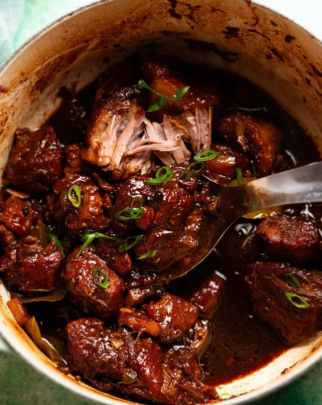

Filipino Pork Adobo

Pork Adobo
is the pride of the Philippines one bite and you'll be hooked! Meltingly tender pork is slow cooked until fall-apart in an intense soy-garlic sauce that reduces down to a glaze, then served over steaming rice. This is food so good yet so simple to make, you'll be shaking your head in disbelief.
Main Ingredients
- Pork Meat Pork belly is the most common cut used for pork adobo, but personal preference can be any kinds of meat.
- Soy Sauces The light soy sauce is the primary soy used here which adds salt and umami without an overwhelming soy flavour. The dark soy sauce darkens the colour of the sauce to almost black.
- Brown Sugar This provides the sweetness in the sauce. White sugar can be used instead though brown is better because it adds a smidge of caramel-y flavour.
- Rice Vinegar The addition of vinegar is what makes adobo unique and distinctly Filipino. It adds backbone and sharpens the sauce, but in a rounded way as the long braising softens the acidity. Feel free to use other kinds of vinegar. White wine, apple cider, or plain old white vinegar will all work.
- Black Peppercorns Whole peppercorns are traditional but not essential in my view. If you don't like biting into whole peppercorns (I personally love the spicy pops!), you can either add a good pinch of ground black pepper, or leave it out.
- Rice Flour I used rice flour from a pack for convenience but traditionally toasted rice flour is used
- Pineapple This is NOT a very common ingredient in traditional pork adobo. However I saw it included in a few modern versions.
- Bay Leaves form the signature flavours of this dish
- Water
How to make it
- Sear Using a large heavy based pot, sear the pork in two batches over high heat until nicely golden all over. Take about 4 minutes to do each batch, turning as needed to sear each side and get some nice golden colour on it. Remove to a bowl and reserve residual fat in the pot.
- Sauté the onion until it softens, adding the garlic towards the end.
- Braising liquid Add the water, soy sauces, vinegar, sugar, bay leaves and peppercorns. Return the pork and any meat juices accumulated in the bowl to the liquid. Bring it to a boil, then lower the heat so the liquid is simmering gently (ie. a few slow-ish bubbles, not rapid small bubbles). More gentle heat = more gentle cooking = more succulent meat.
- Slow cook 1 1/2 hours Partially cover the pot with a lid by this, I mean place the lid on off centre to leave a crack about 2cm / 1″ and simmer gently for 1 1/2 hours or until the pork is tender and can easily be pried apart. If it's still not tender, keep simmering until it is!
- Proof of fall apart pork!
- Reduce sauce Then increase the heat and boil the sauce to reduce down to about 1 1/2 cups (375 ml), about 8 minutes. The exact time this takes will vary, it depends on how much liquid you start with, strength of stove etc.
- Adobo sauce thickness and flavour It should be like a thin syrup, it won't thicken, with an intense flavour this is the way it's supposed to be. The idea is you eat adobo with plenty of rice and serve with modest amounts of sauce rather than drowning your rice in sauce.
- Serve Add the pork and pineapple into the reduced sauce and stir for a few minutes just to heat through. Then over jasmine rice, garnished with green onions.
Home